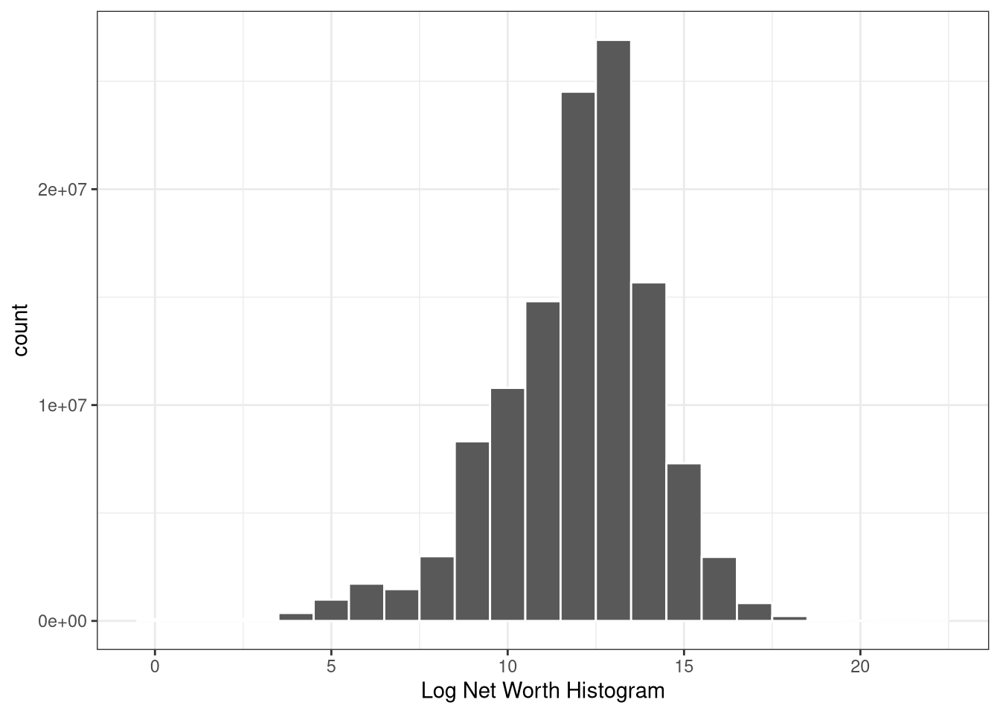
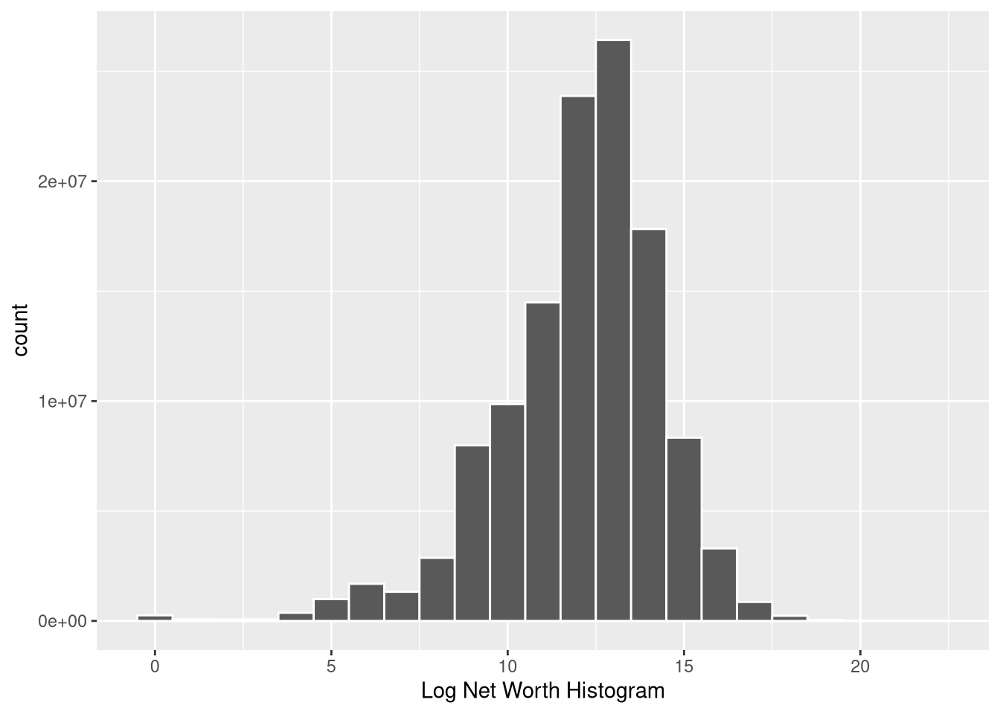
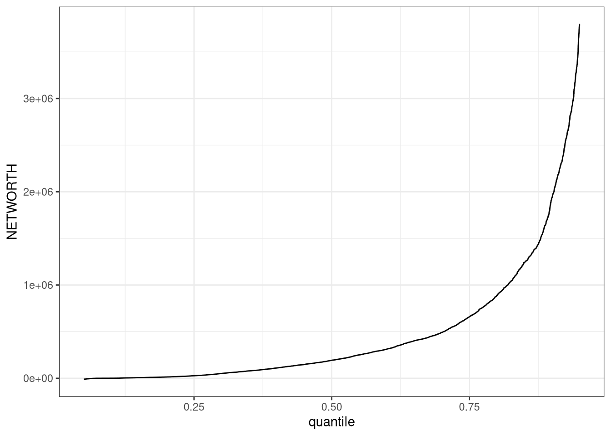
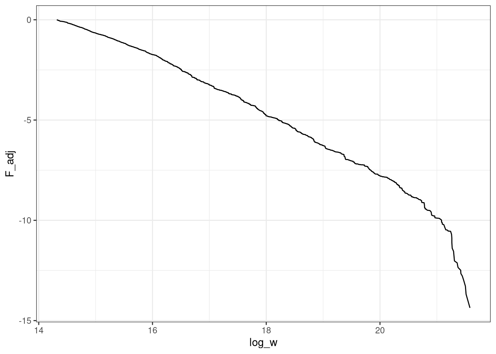

Initialise
library(tidyverse)
library(lodown)
library(survey)
library(mitools)
library(convey)
library(reldist)
library(REAT)library(tidyverse)
library(lodown)
library(survey)
library(mitools)
library(convey)
library(reldist)
library(REAT)# if data not already downloaded
# examine all available SCF microdata files
scf_cat <-
get_catalog( "scf" ,
output_dir = file.path( path.expand( "~" ) , "SCF" ) )
#
# Download 2022 SCF to laptop
scf_cat <- subset( scf_cat , year == 2022 )
scf_cat <- lodown( "scf" , scf_cat )
# Download the files
download.file("https://www.federalreserve.gov/econres/files/scfp2022excel.zip", "SCFP2022.zip")
unzip("SCFP2022.zip")
download.file("https://www.federalreserve.gov/econres/files/scf2022s.zip", "SCF2022s.zip")
download.file("https://www.federalreserve.gov/econres/files/2022map.txt","2022map.txt")
headers <- read.delim("2022map.txt", header=0, sep = "\t")
unzip("SCF2022s.zip")scf_imp <- readRDS( file.path( path.expand( "~" ) , "SCF" , "scf 2022.rds" ) )
scf_rw <- readRDS( file.path( path.expand( "~" ) , "SCF" , "scf 2022 rw.rds" ) )
# I think this basically re-weights the survey and saves as complicated object
scf_design <-
svrepdesign(
weights = ~wgt ,
repweights = scf_rw[ , -1 ] , #don't include yy1 column
data = imputationList( scf_imp ) ,
scale = 1 ,
rscales = rep( 1 / 998 , 999 ) ,
mse = FALSE ,
type = "other" ,
combined.weights = TRUE
)
scf_design$designs <- lapply( scf_design$designs , convey_prep )
scf_MIcombine( with( scf_design , svygini( ~ networth ) ) )We use the summary dataset provided by the Federal Reserve as a benchmark throughout these solutions.
# {# Approach 2 --------------------------------------------------------------}
# This approach uses the "Summary Extract Public Data" provided by the Fed and used in their own publications
# Note this dataset has already constructed the NETWORTH variable we're interested in
# Following here: https://medium.com/@candace_60118/survey-of-consumer-finances-scf-analyzing-weighted-data-in-r-4e4789112c8a
# Also this: https://bookdown.org/jimr1603/Intermediate_R_-_R_for_Survey_Analysis/survey-specific-functions.html
df <- read.csv("SCFP2022.csv")%>%
select(NETWORTH,WGT,OCCAT1) #WGT here is just the sampling weight, this concatenates each of the implicates with eachotherWe construct our dataset starting from the STATA files provided.
df2 <- haven::read_dta("p22i6.dta")
df3 <- transmute(
df2,
wgts = x42001,
cds = pmax(0, x3721),
checking = pmax(0, x3506) * (x3507 == 5) + pmax(0, x3510) * (x3511 == 5) + pmax(0, x3514) * (x3515 == 5) + pmax(0, x3518) * (x3519 == 5) + pmax(0, x3522) * (x3523 == 5) + pmax(0, x3526) * (x3527 == 5) + pmax(0, x3529) * (x3527 == 5),
mmda = pmax(0, x3506 * (x3507 == 1) * (11 <= x9113 &
x9113 <= 13)) + pmax(0, x3510 * (x3511 == 1) * (11 <= x9114 &
x9114 <= 13)) + pmax(0, x3514 * (x3515 == 1) * (11 <= x9115 &
x9115 <= 13)) + pmax(0, x3518 * (x3519 == 1) * (11 <= x9116 &
x9116 <= 13)) + pmax(0, x3522 * (x3523 == 1) * (11 <= x9117 &
x9117 <= 13)) + pmax(0, x3526 * (x3527 == 1) * (11 <= x9118 &
x9118 <= 13)) + pmax(0, x3529 * (x3527 == 1) * (11 <= x9118 &
x9118 <= 13)) + pmax(0, x3730 * (x3732 %in% c(4, 30)) * (x9259 >= 11 &
x9259 <= 13)) + pmax(0, x3736 * (x3738 %in% c(4, 30)) * (x9260 >= 11 &
x9260 <= 13)) + pmax(0, x3742 * (x3744 %in% c(4, 30)) * (x9261 >= 11 &
x9261 <= 13)) + pmax(0, x3748 * (x3750 %in% c(4, 30)) * (x9262 >= 11 &
x9262 <= 13)) + pmax(0, x3754 * (x3756 %in% c(4, 30)) * (x9263 >= 11 &
x9263 <= 13)) + pmax(0, x3760 * (x3762 %in% c(4, 30)) * (x9264 >= 11 &
x9264 <= 13)) + pmax(0, x3765 * (x3762 %in% c(4, 30)) * (x9264 >= 11 &
x9264 <= 13)),
mmmf = pmax(0, x3506 * (x3507 == 1) * ((x9113 < 11) |
(x9113 > 13))) + pmax(0, x3510 * (x3511 == 1) * ((x9114 < 11) |
(x9114 > 13))) + pmax(0, x3514 * (x3515 == 1) * ((x9115 < 11) |
(x9115 > 13))) + pmax(0, x3518 * (x3519 == 1) * ((x9116 < 11) |
(x9116 > 13))) + pmax(0, x3522 * (x3523 == 1) * ((x9117 < 11) |
(x9117 > 13))) + pmax(0, x3526 * (x3527 == 1) * ((x9118 < 11) |
(x9118 > 13))) + pmax(0, x3529 * (x3527 == 1) * ((x9118 < 11) |
(x9118 > 13))) + pmax(0, x3730 * (x3732 %in% c(4, 30)) * ((x9259 < 11) |
(x9259 > 13))) + pmax(0, x3736 * (x3738 %in% c(4, 30)) * ((x9260 < 11) |
(x9260 > 13))) + pmax(0, x3742 * (x3744 %in% c(4, 30)) * ((x9261 < 11) |
(x9261 > 13))) + pmax(0, x3748 * (x3750 %in% c(4, 30)) * ((x9262 < 11) |
(x9262 > 13))) + pmax(0, x3754 * (x3756 %in% c(4, 30)) * ((x9263 < 11) |
(x9263 > 13))) + pmax(0, x3760 * (x3762 %in% c(4, 30)) * ((x9264 < 11) |
(x9264 > 13))) + pmax(0, x3765 * (x3762 %in% c(4, 30)) * ((x9264 < 11) |
(x9264 > 13))),
mma = mmda + mmmf,
call = pmax(0, x3930),
prepaid = pmax(0, x7596),
saving = pmax(-1, x3730 * !(x3732 %in% c(4, 30))) + pmax(0, x3736 * !(x3738 %in% c(4, 30))) + pmax(0, x3742 * !(x3744 %in% c(4, 30))) + pmax(0, x3748 * !(x3750 %in% c(4, 30))) + pmax(0, x3754 * !(x3756 %in% c(4, 30))) + pmax(0, x3760 * !(x3762 %in% c(4, 30))) + pmax(0, x3765),
liq = checking + saving + mma + call + prepaid,
stmutf = pmax(0, x3821 * x3822),
tfbmutf = pmax(0, x3823 * x3824),
gbmutf = pmax(0, x3825 * x3826),
obmutf = pmax(0, x3827 * x3828),
comutf = pmax(0, x3829 * x3830),
omutf = pmax(0, x7785 * x7787),
nmmf = pmax(0, stmutf + tfbmutf + gbmutf + obmutf + comutf + omutf),
stocks = pmax(0, x3915),
bond = x3910 + x3906 + x3908 + x7634 + x7633,
irakh = x6551 + x6552 + x6553++x6554 + x6559 + x6560 + x6561 + x6562 + x6567 +
x6568 + x6569 + x6570,
futpen = pmax(0, x5604) + pmax(0, x5612) + pmax(0, x5620) +
pmax(0, x5628),
currpen = x6462 + x6467 + x6472 + x6477 + x6957,
mutual_funds = x3822 + x3824 + x3826 + x3828 + x3830 + x7787,
savbnd = x3902,
cashli = pmax(0, x4006),
other_bonds = x7635 + x7637 + x7636 + x7633 + x7638 + x7639,
plc_stock = x3915 + x3930 - x3932,
annuit = pmax(0, x6577),
trusts = pmax(0, x6587),
othma = annuit + trusts,
othfin = pmax(
0,
x4018 + x4022 * (x4020 %in% c(
61, 62, 63, 64, 65, 66, 71, 72, 73, 74, 77, 80, 81, -7
)) + x4026 * (x4024 %in% c(
61, 62, 63, 64, 65, 66, 71, 72, 73, 74, 77, 80, 81, -7
)) + x4030 * (x4028 %in% c(
61, 62, 63, 64, 65, 66, 71, 72, 73, 74, 77, 80, 81, -7
))
),
equity = stocks + stmutf + 0.5 * comutf + omutf + (x6551 + x6552 + x6553 + x6554) * ((x6555 == 1) + (x6555 %in% c(3, 30)) * (pmax(0, x6556) / 10000)) +
(x6559 + x6560 + x6561 + x6562) * ((x6563 == 1) + (x6563 %in% c(3, 30)) * (pmax(0, x6564) / 10000)) +
(x6567 + x6568 + x6569 + x6570) * ((x6571 == 1) + (x6571 %in% c(3, 30)) * (pmax(0, x6572) / 10000)) +
annuit * ((x6581 == 1) + (x6581 %in% c(3, 30)) * (pmax(0, x6582) / 10000)) +
trusts * ((x6591 == 1) + (x6591 %in% c(3, 30)) * (pmax(0, x6592) / 10000)) +
(x6461 == 1) * x6462 * ((x6933 == 1) + (x6933 %in% c(3, 30)) * (pmax(0, x6934) / 10000)) +
(x6466 == 1) * x6467 * ((x6937 == 1) + (x6937 %in% c(3, 30)) * (pmax(0, x6938) / 10000)) +
(x6471 == 1) * x6472 * ((x6941 == 1) + (x6941 %in% c(3, 30)) * (pmax(0, x6942) / 10000)) +
(x6476 == 1) * x6477 * ((x6945 == 1) + (x6945 %in% c(3, 30)) * (pmax(0, x6946) / 10000)) +
x5604 * ((x6962 == 1) + (x6962 %in% c(3, 30)) * (pmax(0, x6963) / 10000)) +
x5612 * ((x6968 == 1) + (x6968 %in% c(3, 30)) * (pmax(0, x6969) / 10000)) +
x5620 * ((x6974 == 1) + (x6974 %in% c(3, 30)) * (pmax(0, x6975) / 10000)) +
x5628 * ((x6980 == 1) + (x6980 %in% c(3, 30)) * (pmax(0, x6981) / 10000)) +
x3730 * ((x7074 == 1) + (x7074 %in% c(3, 30)) * (pmax(0, x7075) / 10000)) +
x3736 * ((x7077 == 1) + (x7077 %in% c(3, 30)) * (pmax(0, x7078) / 10000)) +
x3742 * (x7080 == 1 + x7080 %in% c(3, 30)) * (pmax(0, x7081) / 10000) +
x3748 * (x7083 == 1 + x7083 %in% c(3, 30)) * (pmax(0, x7084) / 10000) +
x3754 * (x7086 == 1 + x7086 %in% c(3, 30)) * (pmax(0, x7087) / 10000) +
x3760 * (x7089 == 1 + x7089 %in% c(3, 30)) * (pmax(0, x7090) / 10000),
saveq = pmax(
0,
x3730 * (x7074 == 1 + x7074 %in% c(3)) * (pmax(0, x7075) / 10000) +
x3736 * (x7077 == 1 + x7077 %in% c(3)) * (pmax(0, x7078) / 10000) +
x3742 * (x7080 == 1 + x7080 %in% c(3)) * (pmax(0, x7081) / 10000) +
x3748 * (x7083 == 1 + x7083 %in% c(3)) * (pmax(0, x7084) / 10000) +
x3754 * (x7086 == 1 + x7086 %in% c(3)) * (pmax(0, x7087) / 10000) +
x3760 * (x7089 == 1 + x7089 %in% c(3)) * (pmax(0, x7090) / 10000)
),
reteq = pmax(
0,
sum(x6551, x6552, x6553, x6554) * ((x6555 == 1) +
(x6555 %in% c(3, 30)) * (pmax(0, x6556) / 10000)) +
sum(x6559, x6560, x6561, x6562) * ((x6563 == 1) +
(x6563 %in% c(3, 30)) * (pmax(0, x6564) / 10000)) +
sum(x6567, x6568, x6569, x6570) * ((x6571 == 1) +
(x6571 %in% c(3, 30)) * (pmax(0, x6572) / 10000)) +
(x6461 == 1) * x6462 * ((x6933 == 1) + (x6933 %in% c(3, 30)) * (pmax(0, x6934) / 10000)) +
(x6466 == 1) * x6467 * ((x6937 == 1) + (x6937 %in% c(3, 30)) * (pmax(0, x6938) / 10000)) +
(x6471 == 1) * x6472 * ((x6941 == 1) + (x6941 %in% c(3, 30)) * (pmax(0, x6942) / 10000)) +
(x6476 == 1) * x6477 * ((x6945 == 1) + (x6945 %in% c(3, 30)) * (pmax(0, x6946) / 10000)) +
x5604 * ((x6962 == 1) + (x6962 %in% c(3, 30)) * (pmax(0, x6963) / 10000)) +
x5612 * ((x6968 == 1) + (x6968 %in% c(3, 30)) * (pmax(0, x6969) / 10000)) +
x5620 * ((x6974 == 1) + (x6974 %in% c(3, 30)) * (pmax(0, x6975) / 10000)) +
x5628 * ((x6980 == 1) + (x6980 %in% c(3, 30)) * (pmax(0, x6981) / 10000))
),
retqliq = irakh + futpen,
fin = liq + cds + nmmf + stocks + bond + retqliq + savbnd +
cashli + othma + othfin,
vehic = pmax(0, x8166) + pmax(0, x8167) + pmax(0, x8168) + pmax(0, x8188) +
pmax(0, x2422) + pmax(0, x2506) + pmax(0, x2606) + pmax(0, x2623),
mps = x604 + x614 + x623,
home = x716,
vac = x1705 * x1706 + x1805 * x1806 + x2002 + x2012,
farms = x513 + x526,
farmbus = ifelse(x507 > 0,
((x507 / 10000) * (x513 + x526 - x805 - x905 - x1005)),
0),
x805 = x805 * ((10000 - x507) / 10000),
x808 = x808 * ((10000 - x507) / 10000),
x813 = x813 * ((10000 - x507) / 10000),
x905 = x905 * ((10000 - x507) / 10000),
x908 = x908 * ((10000 - x507) / 10000),
x913 = x913 * ((10000 - x507) / 10000),
x1005 = x1005 * ((10000 - x507) / 10000),
x1008 = x1008 * ((10000 - x507) / 10000),
x1013 = x1013 * ((10000 - x507) / 10000),
farmbus = ifelse(x1103 == 1,
farmbus - x1108 * (x507 / 10000),
farmbus),
x1108 = x1108 * ((10000 - x507) / 10000),
x1109 = x1109 * ((10000 - x507) / 10000),
farmbus = ifelse(x1114 == 1,
farmbus - x1119 * (x507 / 10000),
farmbus),
x1119 = x1119 * ((10000 - x507) / 10000),
x1120 = x1120 * ((10000 - x507) / 10000),
farmbus = ifelse(x1125 == 1,
farmbus - x1130 * (x507 / 10000),
farmbus),
x1130 = x1130 * ((10000 - x507) / 10000),
x1131 = x1131 * ((10000 - x507) / 10000),
farmbus = ifelse(x1136 > 0 & (x1108 + x1119 + x1130 > 0),
farmbus - x1136 * (x507 / 10000) * ((x1108 * (x1103 == 1) +
x1119 * (x1114 == 1) +
x1130 * (x1125 == 1)) / (x1108 + x1119 + x1130)),
farmbus),
houses = sum(0, x604, x614, x623, x716) + ((10000 - pmax(0, x507)) / 10000) * (x513 + x526),
oresre = pmax(x1306, x1310) + pmax(x1325, x1329) + pmax(0, x1339) +
ifelse(x1703 %in% c(12, 14, 21, 22, 25, 40, 41, 42, 43, 44, 49, 50, 52, 999),
pmax(0, x1706) * (x1705 / 10000),
0) +
ifelse(x1803 %in% c(12, 14, 21, 22, 25, 40, 41, 42, 43, 44, 49, 50, 52, 999),
pmax(0, x1806) * (x1805 / 10000),
0) +
pmax(0, x2002),
nnresre = ifelse(
x1703 %in% c(1, 2, 3, 4, 5, 6, 7, 10, 11, 13, 15, 24, 45, 46, 47, 48, 51, 53, -7),
pmax(0, x1706) * (x1705 / 10000),
0) +
ifelse(
x1803 %in% c(1, 2, 3, 4, 5, 6, 7, 10, 11, 13, 15, 24, 45, 46, 47, 48, 51, 53, -7),
pmax(0, x1806) * (x1805 / 10000),
0) +
pmax(0, x2012) -
ifelse(
x1703 %in% c(1, 2, 3, 4, 5, 6, 7, 10, 11, 13, 15, 24, 45, 46, 47, 48, 51, 53, -7),
x1715 * (x1705 / 10000),
0) -
ifelse(
x1803 %in% c(1, 2, 3, 4, 5, 6, 7, 10, 11, 13, 15, 24, 45, 46, 47, 48, 51, 53, -7),
x1815 * (x1805 / 10000),
0) -
x2016,
bus = pmax(0, x3129) + pmax(0, x3124) - pmax(0, x3126) * (x3127 == 5) +
pmax(0, x3121) * (x3122 %in% c(1, 6)) +
pmax(0, x3229) + pmax(0, x3224) - pmax(0, x3226) * (x3227 == 5) +
pmax(0, x3221) * (x3222 %in% c(1, 6)) +
pmax(0, x3335) + farmbus +
pmax(0, x3408) + pmax(0, x3412) + pmax(0, x3416) + pmax(0, x3420) +
pmax(0, x3452) + pmax(0, x3428),
actbus = pmax(0, x3129) + pmax(0, x3124) - pmax(0, x3126) * (x3127 == 5) +
pmax(0, x3121) * (x3122 %in% c(1, 6)) +
pmax(0, x3229) + pmax(0, x3224) - pmax(0, x3226) * (x3227 == 5) +
pmax(0, x3221) * (x3222 %in% c(1, 6)) +
pmax(0, x3335) + farmbus,
nonactbus = pmax(0, x3408) + pmax(0, x3412) + pmax(0, x3416) + pmax(0, x3420) +
pmax(0, x3452) + pmax(0, x3428),
othnfin=x4022+x4026+x4030-othfin+x4018,
nfin=vehic+houses+oresre+nnresre+bus+othnfin,
asset=fin+nfin,
)Make two histograms for: (a) the level of wealth (only plot up to the 95th percentile, otherwise the graph will be hard to read), (b) the logarithm of wealth.
## Q1: Make two histograms for: (a) the level of wealth (only plot up to the 95th percentile)
# Find 95th perc
q_95<- wtd.quantile(df$NETWORTH, q=0.95, weight = df$WGT)
# Make hist up to 95th perc
hist1<-df%>%
filter(NETWORTH<q_95)%>%
ggplot(mapping = aes(NETWORTH,weight = WGT)) +
geom_histogram(binwidth = 100000,
color = "white") +
labs(x = "Net Worth Histogram")
hist1
## (b) the logarithm of wealth.
# Make hist up to 95th perc
hist2<-df%>%
filter(NETWORTH>0)%>%
mutate(ln_networth = log(NETWORTH))%>%
ggplot(mapping = aes(ln_networth,weight = WGT)) +
geom_histogram(binwidth = 1,
color = "white") +
labs(x = "Log Net Worth Histogram")
hist2
Plot the quantile function (you will likely have to cut the y-axis to make it readable due to the “dwarves and giants” feature).
## Q3: Plot the quantile function
# Choose number of points to fit to
quantiles_q3 <-(seq(0, 1, by = 0.01))
# Find quantile at each point (using the weights)
quantile_function<-cbind(quantiles_q3,wtd.quantile(df$NETWORTH, q=quantiles_q3, weight = df$WGT))%>%
as_tibble%>%
rename(quantile=quantiles_q3)%>%
rename(value=V2)Warning: The `x` argument of `as_tibble.matrix()` must have unique column names if
`.name_repair` is omitted as of tibble 2.0.0.
ℹ Using compatibility `.name_repair`.# Create the plot
quantile_plot<-quantile_function%>%
filter(quantile<0.95)%>%
filter(quantile>0.05)%>%
ggplot(aes(x=quantile,y=value))+
geom_line()+
theme_bw()
# Alternate way to do all this manually by summing weights
quantile_function2<-df%>%
arrange((NETWORTH))%>%
mutate(cum_sum = cumsum(WGT))%>%
mutate(WGT_TOTAL = sum(WGT))%>%
mutate(quantile=cum_sum/WGT_TOTAL)%>%
select(quantile,NETWORTH)
quantile_plot2<-quantile_function2%>%
filter(quantile<0.95)%>%
filter(quantile>0.05)%>%
ggplot(aes(x=quantile,y=NETWORTH))+
geom_line()+
theme_bw()
# They look pretty similar
quantile_plot
quantile_plot2
Plot the Lorenz curve.
## Q4: Plot the Lorenz curve
# That was easy
lorenz(df$NETWORTH, weighting = df$WGT, z = NULL, na.rm = TRUE,
lcx = "Income share", lcy = "Population share",
lctitle = "Lorenz curve")For the wealth above the 90th percentile, plot \(\log(1 − F (w))\) against \(\log w\) where \(F (w)\) is the cumulative distribution function of wealth \(w\). Figure 1 plots the corresponding graph for the 2007 SCF. If the distribution had an exact Pareto tail, this should be a straight line. The plot you will generate will most likely have the feature that the Pareto relationship breaks down for high enough wealth levels. Why?
## Q5:For the wealth above the 90th percentile, plot log(1 − F (w)) against log w
# where F (w) is the cumulative distribution function of wealth w.
# Extract data for the top 10%
q_90<- wtd.quantile(df$NETWORTH, q=0.90, weight = df$WGT)
wealth_top10<-df%>%
filter(NETWORTH>q_90)%>%
# Construct CDF function by summing mass below each point
arrange((NETWORTH))%>%
mutate(cum_sum = cumsum(WGT))%>%
mutate(WGT_TOTAL = sum(WGT))%>%
mutate(F=cum_sum/WGT_TOTAL)%>%
# Construct the variables we need
mutate(F_adj = log(1-F))%>%
filter(NETWORTH>0)%>%
mutate(log_w = log(NETWORTH))
# Make plot
plot_q5<-wealth_top10%>%
filter(F<1)%>%
ggplot(aes(x=log_w,y=F_adj))+
geom_line()+
theme_bw()
plot_q5
Let’s assess what fraction of people in different parts of the wealth distribution are “en- trepreneurs” broadly defined. To this end use the variable X4106. For each of the wealth groups in question 2, calculate the fraction of people who are “entrepreneurs”. Add your answer to Table 1.